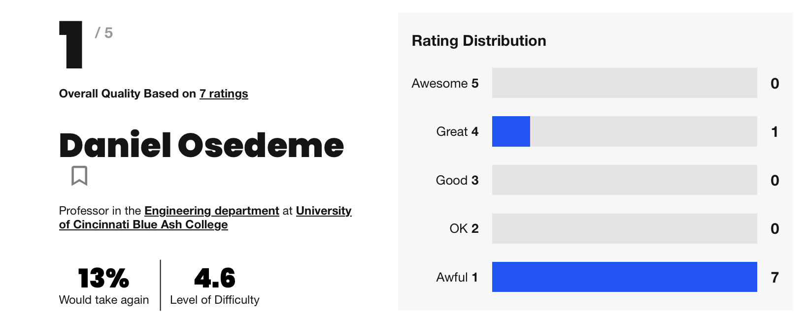
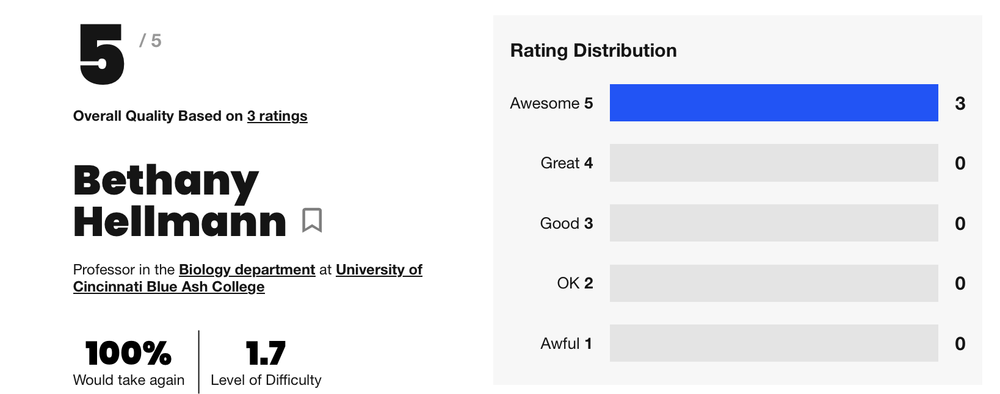

How to use Rate My professor to pick Your classes
All of my freinds have told me that if you don't hurry up and schedule your classes for the upcoming semester you won't have any good professors left,I know you've heard if you don't hurry up and pick your classes there will be no more good teachers left. But you shouldn't select classes blindy.
Use rate my professor to maximize your fall/spring semester.
Using Rate my professor is simple. First start by going to your nearby mobile device and searching up Ratemyprofessors.com. Then type your schools name into the search bar so in our case we'd type in University of Cincinnati Blue Ash,Then the search for the professers name will show up. There you can search up the various professors that you need to take for your course.
When you get to the professors page ther will be three numbers,quality which will be rated out of five and the overall percentage if students would take the class again,and finally the level of difficulty of the course and teacher.
Below all the numbers you will find reveiews of students who've taken the class,some key things to pay attention to when reading the reviews are how the previous students describe the professors,how the professors teach,if they're available for office hours and or helpful outside of class,how their exams are hard easy,and if the professor offers extra credit.

Type of professors to not pick
A profile like this is a warning sign all of his numbers are low and his level of difficulty is really high. as you can see over at the rating distribution hes had seven ratings and the majority of the ratings them saying this professor is awful.
If this is the only professor left for the course that you have to take,you need to limit all distractions in this class,ask alot of questions,and go to the professors office hours.

Professors you should pick
This is a way reasuring profile than the last one This shows that when students take her class they enjoy it.
On this profile all three of the people who took this class said that they would take again,and when we look at the rating distribution they all said that she was awesome and her level of difficulty is really low,her overall quality is really high.